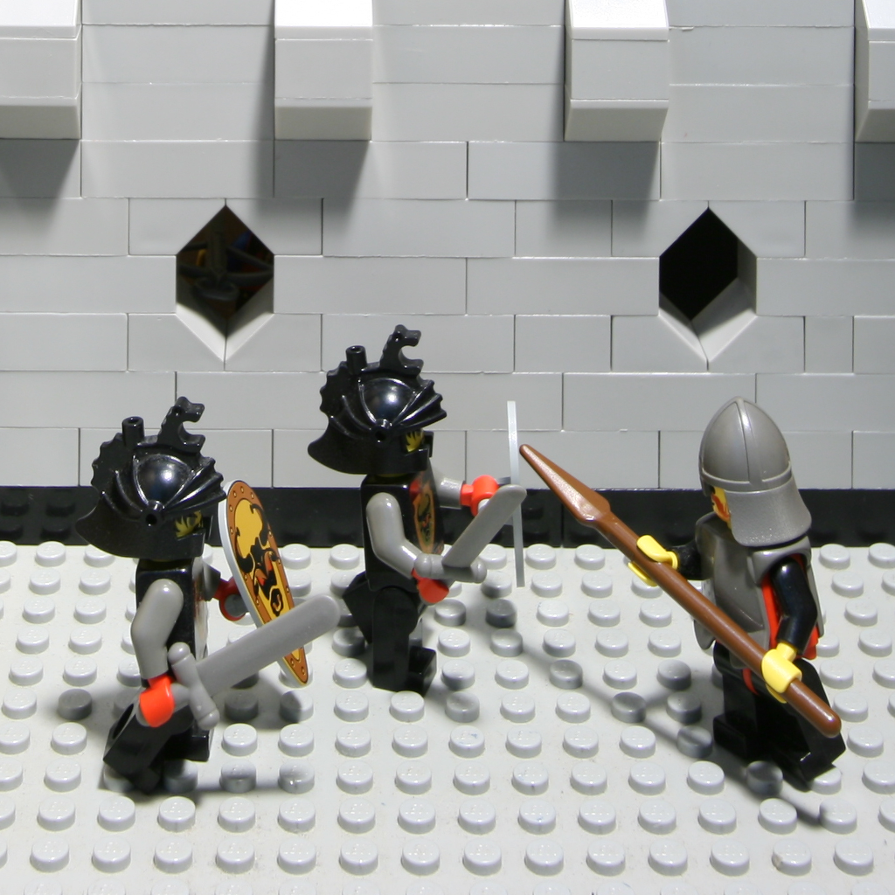
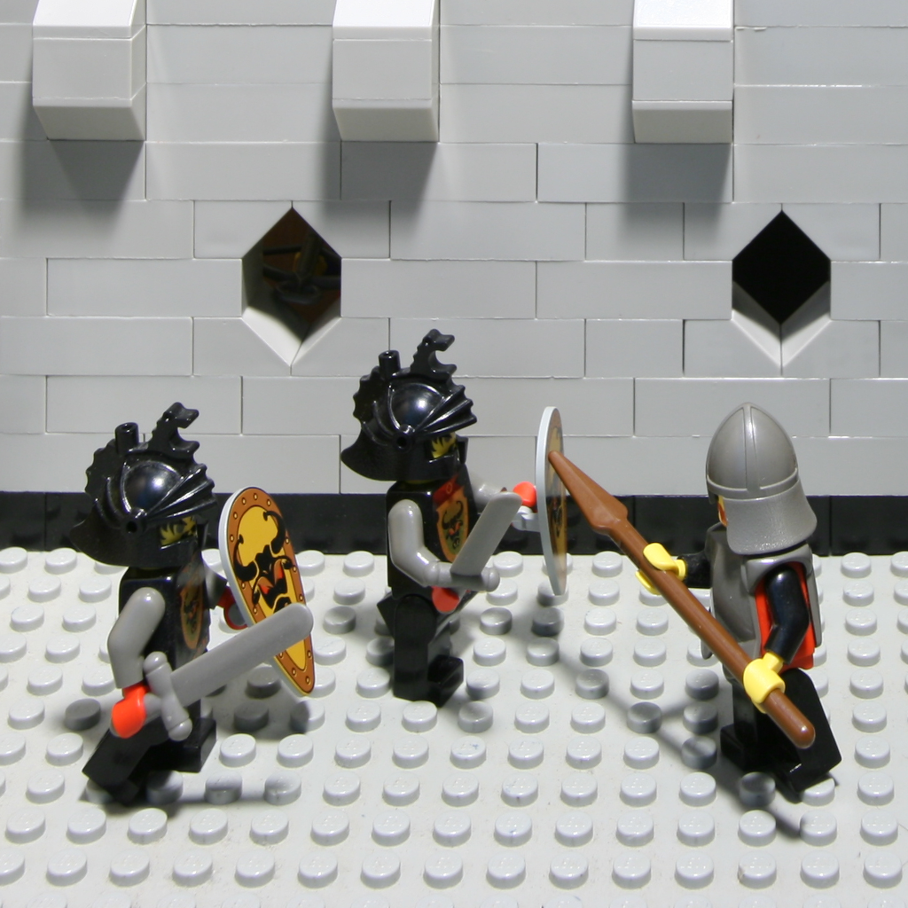
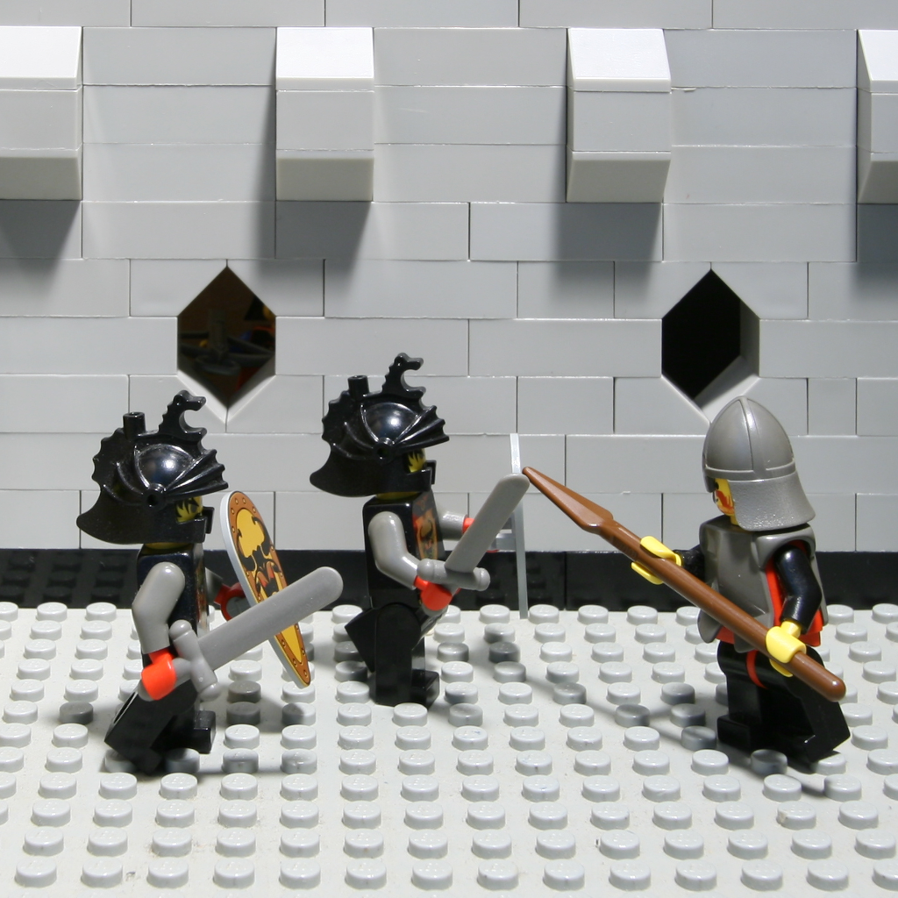
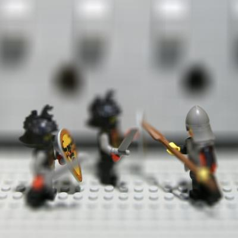

CS194-26 | Light Fields
Allen Zeng, CS194-26-aec

Light Fields
A light field is a function that describes how much light is flowing through every point in a space. Using a light field camera, as described in this paper, it is possible to capture a plane of the lightfield in a scene. The Standford Light Field Archive has sample light field data, from which I am using the "Lego Knights" dataset. The lightfield in the Lego scene consists of $289$ images sampled in a $17\times17$ regularly spaced grid. Using the light field data, we can simulate operations such as depth refocusing and aperture adjustment.
Below are sample images from the Lego Knights dataset. These images are the four corner images in the $17\times17$ grid. Notice how the camera changes position only very slightly, and keeps the optical axis directed towards the same place in the scene.
|  |  |
|  |

|
{kind=link}
{kind=link}
{kind=link}
Part 1 - Depth Simulation
By averaging the images they are presented in the dataset, we obtain an image where the focus is at a middle distance in the scene. Here, the left knight's shield and right knight's right hand is in focus. Essentially, the operation simulates the focusing feature of a regular camera.

There is parallax as the light field camera samples images along the grid. Objects that are close, such as the knights, move very much in their image positions across the samples. (See the four corners above.) And objects that are far away, such as the wall, move very little in their image position. So by shifting the original images so that certain features overlap, when averaging the shifted images we can obtain an output image that is focused at those features. For example, by shifting top-left images down and right, shifting bottom-right images up and left, and shifting all other images similarly; all of the walls in all of the images end up aligned. Then the average of the aligned images produces a new image where the wall is the focus of that image.
Below is that shifting process applied to all relevant distances in the dataset. Notice how the focus shifts between the wall and the front knights' weapons.
Part 2 - Aperture Simulation
We can also simulate the aperture adjustment of a regular camera. In regular cameras, small apertures (high $f/$ number) with a slow shutter speed create images where much of the scene is in focus. Large apertures (low $f/$ number) and a fast shutter speed create images where usually only the target of the photograph is in focus. For example, San Francisco. This effect arises becase larger apertures let more light in from all directions, increasing the likelihood of blurring non-target features in a scene.
By choosing the amount of images we average over, different aperture sizes are simulated. By choosing only a few images in the center of the light field grid, a small aperture is simulated. By choosing most of the images around the center of the light field grid, a large aperture is simualated.
{kind=link}